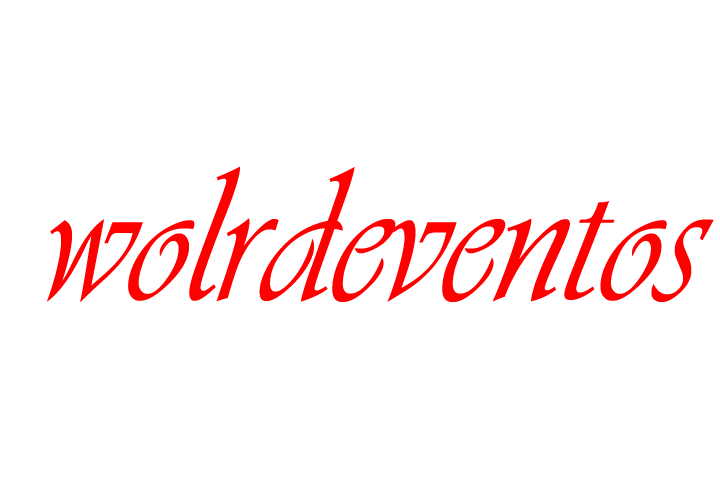

<ion-header [translucent]="true">
  <ion-toolbar>
    <div class="logohome">
    <ion-title>
      Home
    </ion-title>
  </div>
  </ion-toolbar>
</ion-header>

<ion-content [fullscreen]="true">
 
  <ion-header collapse="condense">
    <ion-toolbar>
      <ion-title size="large">Blank</ion-title>
    </ion-toolbar>
    
  </ion-header>
  
  
 
 

</ion-content>
